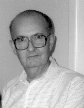

Please note: the AAS Obituaries are temporarily being hosted on this website while their full content is being ingested into the PubPub publishing platform newly adopted by the Bulletin of the American Astronomical Society. When the migration is complete, your existing links will take you to the final, migrated content. Contact peter.williams@aas.org with any questions.
William Blitzstein (1920-1999)
William Blitzstein, a modern pioneer in stellar radiometry, died February 27, 1999. Born of immigrant parents, he went to Philadelphia public schools and by his late teens had become the person of choice to silver mirrors for Philadelphia amateur astronomers, an early indication of the observer-instrumentalist he was to become. He graduated from the University of Pennsylvania as a physics major in 1941 and received his PhD in astronomy, also from Penn, in 1950 under Newton Pierce and Charles Olivier.
Bill joined the Penn faculty in 1954 as Assistant Professor of Astronomy and Electrical Engineering, and became Professor of Astronomy ten years later. From 1979 to 1984, he chaired Penn's Department of Astronomy and Astrophysics and directed its Flower and Cook Observatory.
Bill's impact on astronomy arose from an encouragement by A.E. Whitford in 1946 to develop a pulse-counting system for photoelectric work, This had become possible through wartime circuit improvements and the postwar commercial availability of the 1P21 multiplier photocell. By 1948, he had a system functioning at the Cook Observatory and obtained the first useful light curve of the very deeply-eclipsing Algol, XZ And. It would be about another 10 years before a pulse-counting system was developed elsewhere. Even as Bill's work continued, he joined Newton Pierce at Princeton to invent a simultaneous 2-source, pulse-counting photometer. When Pierce died prematurely in 1950, Lyman Spitzer generously arranged to move the program from Princeton to Penn and by 1958, with the support of F.B. Wood and several contracts and grants, Bill had a completely digitized, 2-source system functioning at Cook. It would be more than a decade before similar photometers were routinely built by other groups.
The power of the Pierce-Blitzstein photometer lay in its ability to null all but the most extreme fluctuations in atmospheric transparency, leaving only shot noise and scintillation noise uncorrelated between the two channels as the sources of observational error. After many upgradings and changes of computer interfacings, the Pierce-Blitzstein photometer continues to be highly productive for variable star light curves. Bill later developed 2- and 4-channel polarimeters for mapping the scattering environment around close binary stars. An entire generation of binary-star astronomers did their theses at Flower and Cook using his instrumentation.
In the course of these projects, Bill also became an expert on atmospheric transmission in the visible and near infrared, and was much in demand as a consultant to industry. A group from RCA, of which Bill was the team astronomer, along with groups from MIT and Jodrell Bank, detected radar echoes from Venus for the first time during its 1961 close approach, thus ushering in modern improvements of planetary orbits.
In retirement, Bill pursued a different interest, studying the handwritten observing journals of the astronomer John Flamsteed, Newton's contemporary. Applying modern astronomical knowledge and constants, he quantified for the first time the random and systematic errors of Flamsteed's mural arc and also analyzed his 7 pre-discovery observations of Uranus. Bill's last two papers in the astronomical literature were on this subject. At the time of his death he was working on assorted stellar objects seemingly observed by Flamsteed but unknown since his time.
As Bill's colleagues, we remember a kind and generous friend, a respected mentor of his students, and a self-effacing scientist of unusual brilliance. Bill commanded a profound, almost intuitive, insight into all branches of classical physics, and his deep understanding of the subtleties of celestial mechanics, in particular, was the envy of all of us. For decades he taught a graduate course in that subject along with a second one concentrating on astronomical instrumentation and noise theory. A devoted teacher, Bill will also be remembered by many thousands of Penn undergraduates, who learned the workings of real science through his no-nonsense courses in introductory astronomy.
Photo courtesy of Robert Koch.
Obituary written by: R. H. Koch (University of Pennsylvania), B. S. P. Shen (University of Pennsylvania)
BAAS Citation: BAAS, 1999, 31, 1595
SAO/NASA ADS Bibcode: 1999BAAS...31.1595K